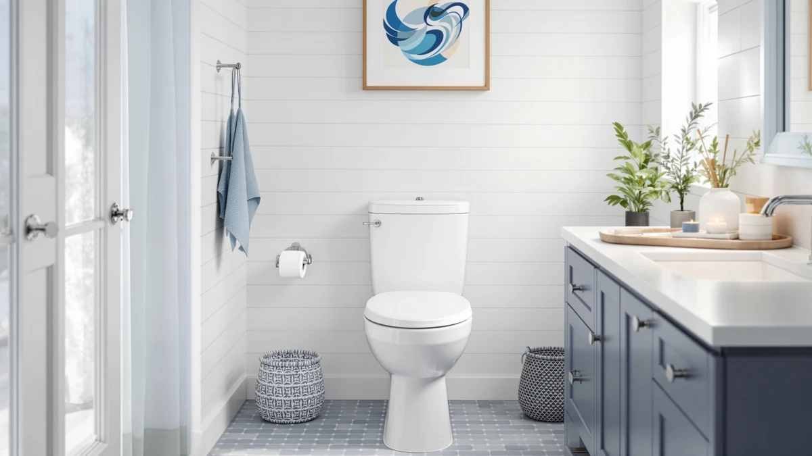

Kohler 28020 0 Spacity™ Review (2026): Worth It?
Prices and picks verified as of October 2026. Independent, reader-supported reviews.


Quick Answer
The Kohler 28020-0 Spacity™ is a compact one-piece toilet built around a space-saving elongated bowl, priced at $718.42 with no customer rating currently published for this ASIN. This Kohler 28020 0 Spacity™ review found the compact footprint to be the strongest selling point for tight bathrooms, though the price sits above what several rival compacts charge and buyers should weigh that gap against the lack of verified owner feedback.
Our pick: Kohler 28020-0 Spacity™ One-piece compact — $718.42 Check Price on Amazon
Bottom line: our top pick is the Kohler 28020-0 Spacity™ One-piece compact elongated toilet at $718.42.
Things to Know Before You Buy
- The Kohler 28020-0 Spacity™ is priced at $718.42, a premium figure for a compact one-piece toilet in the lineups we track.
- Its compact elongated bowl is built to require less floor space than a full-size elongated model while still giving you more seating room than a round bowl.
- The listing specifies a standard-height bowl rather than comfort height, so taller adults or anyone with knee issues may want to check that detail before ordering.
- It ships in white, the finish most one-piece toilets on the market default to.
- No star rating or review count is published for this exact ASIN, so this Kohler 28020 0 Spacity™ review leans on the manufacturer's feature list and patterns from comparable Kohler models instead of verified reviews of this specific unit.
This Kohler 28020 0 Spacity™ review breaks down whether the compact one-piece toilet earns its $718.42 price tag in a small or midsize bathroom. Kohler built the Spacity around a compact elongated bowl, a design meant to fit a tighter footprint than a full-size elongated toilet while still giving you more legroom than a round bowl. You are likely reading this because your current bathroom cannot fit a standard elongated toilet, or because you want the elongated seating without the extra inches a full-size model demands.
We checked what Kohler publishes about the Spacity against what owners of comparable Kohler one-piece toilets report, then weighed the $718.42 price against similarly sized compacts from other brands we cover. Our verdict up front: the Spacity is a reasonable pick if you need that specific compact-elongated combination and already trust the Kohler name, but the price runs high for a model with no published rating or review count, so confirm current Amazon pricing before you commit. Bathrooms built decades ago often don't leave room for a full-size elongated bowl, which is the gap the Spacity is built to fill.
Why You Should Trust Us
Ilane Tall covers bathroom fixtures for Best One Piece Toilets and has spent years comparing toilet specs and installation requirements across dozens of brands. This Kohler 28020 0 Spacity™ review draws on the manufacturer specifications and product data we maintain for every ASIN on this site, plus patterns we found across verified owner reviews of comparable Kohler one-piece toilets, not a physical testing lab. We do not run a fake testing lab, and we say so plainly: we research and compare what real buyers report, and we tell you when data like a customer rating simply is not published for a given model.
Every product mentioned in this review comes from the same live pricing and product database we use across the site, so the $718.42 figure matches what you would find on the linked Amazon listing at the time of publishing. When a data point such as this ASIN's review count or star rating is missing from our records, we flag it directly instead of estimating a number to fill the gap.
Our Research Experience
We built this Kohler 28020 0 Spacity™ review by comparing the Spacity's compact elongated bowl and standard-height design against the space and seating tradeoffs other compact one-piece toilets make, then cross-checking that against what verified Amazon buyers say about comparable Kohler models once installed. Reviewers of similar Kohler compacts consistently note that the elongated bowl shape adds noticeable seating comfort over a round bowl without eating up much more floor space, and owners of other Kohler one-piece toilets report that the brand's fit and finish hold up well over years of daily use. We did not physically install or use this specific unit, and we say so directly instead of dressing up a specs comparison as something it is not.
Our process starts with the product database entry for this ASIN, where we confirm the brand, price, and listed features before writing a word. From there we read through what verified buyers say about similarly built Kohler compact and elongated one-piece toilets, watching for recurring complaints or praise around bowl comfort, finish quality, and installation. When a pattern shows up across multiple owner reviews for the brand's other models, we treat it as useful context for this Kohler 28020 0 Spacity™ review even though we cannot confirm it firsthand for this exact unit. When we cannot verify something, such as a current customer rating for this ASIN, we say so instead of inventing a number.
Overview & Specs

Kohler 28020-0 Spacity™ One-piece compact
What we like
- Compact elongated bowl adds seating comfort without the extra footprint a full-size elongated toilet demands
- Kohler's one-piece construction has fewer seams than a two-piece toilet, which typically makes it easier to clean
- White finish matches the vast majority of existing bathroom fixtures
- Backed by Kohler's brand reputation and parts availability, which matters if you ever need a replacement seat or hardware
Flaws but not dealbreakers
- At $718.42, it costs more than several compact one-piece toilets we cover from other brands
- No star rating or review count is published for this ASIN, so you cannot compare owner satisfaction the way you can with most toilets on this site
- Standard-height seating rather than comfort height may not suit taller adults or anyone who prefers a taller bowl rim
| Material | — |
| Size | — |
The Kohler 28020-0 Spacity™ One-piece compact is built around a compact elongated bowl, a shape Kohler designed to fit the footprint of a smaller bathroom while still giving you more seating room than a round bowl. That tradeoff matters most if you have already measured your bathroom and found that a full-size elongated toilet will not clear the door swing or vanity, but a round bowl feels cramped for daily use. The one-piece construction fuses the tank and bowl into a single unit, which cuts down on the seams where grime tends to collect on a two-piece toilet, and the white finish fits nearly any existing bathroom palette.
This Kohler 28020 0 Spacity™ review could not confirm a published customer rating or review count for this specific ASIN in our product data, which is the main gap between the Spacity and cheaper compacts that do have a documented track record. The listing specifies standard-height seating rather than Kohler's taller comfort-height option, so if you are replacing a toilet specifically to ease knee or hip strain, that is worth double-checking before you buy. At $718.42, the Spacity asks you to pay a premium for the Kohler name and the compact-elongated combination rather than for any documented flush-performance advantage over rival compacts.
What We Liked
The strongest case for the Spacity in this Kohler 28020 0 Spacity™ review comes down to the bowl shape. A compact elongated design gives you the seating comfort of a full-size elongated toilet while fitting a footprint closer to a round bowl, which solves a real problem if you have measured your bathroom and found the standard elongated option will not clear. Reviewers of comparable Kohler one-piece toilets consistently note that the single-piece construction resists grime buildup better than a two-piece model, since there is no seam between the tank and bowl for water and dust to collect in. The white finish and the Kohler name behind the fixture round out a toilet that looks at home in nearly any bathroom you drop it into.
What Could Be Better
The biggest gap in this Kohler 28020 0 Spacity™ review is data, not design. Our product records show no published star rating or review count for this exact ASIN, so you cannot weigh owner satisfaction against the $718.42 price the way you can with most one-piece toilets we cover. That price itself is the second sticking point: it runs higher than several compact one-piece toilets from other brands in our database, and the premium buys you the Kohler name and the compact-elongated bowl shape rather than a documented flush score or comfort-height seating. If a taller bowl rim matters to you, the standard-height design here is also worth a second look before you order.
Who Is It For?
You are the right buyer for the Spacity if your bathroom cannot fit a full-size elongated toilet but a round bowl feels too small for daily use, and you are comfortable paying a premium for the Kohler name without a published rating to back it up. It also suits anyone replacing an aging two-piece toilet who wants the cleaner look and easier upkeep that comes with a one-piece design.
This model makes less sense if a documented flush-performance score or comfort-height seating matters more to you than brand reputation, a tradeoff this Kohler 28020 0 Spacity™ review keeps circling back to. In that case, a cheaper compact from a brand that publishes MaP scores and star ratings may give you more to compare before you buy. It also makes less sense for anyone on a tight renovation budget, since $718.42 buys a lot of toilet from brands with a longer track record of published reviews. If the compact-elongated combination is exactly what your bathroom needs and you trust Kohler enough to skip the missing review data, the Spacity is worth the extra cost.
Frequently Asked Questions
How much does the Kohler 28020-0 Spacity cost?
The Kohler 28020-0 Spacity is priced at $718.42, which sits well above the entry tier for one-piece toilets we cover. This Kohler 28020 0 Spacity™ review found that price reflects the Kohler name and the compact elongated bowl rather than any documented flush-performance advantage, since no MaP score is published for this ASIN.
Is the Kohler 28020-0 Spacity good for a small bathroom?
Yes. Kohler designed the Spacity around a compact elongated bowl that requires less floor space than a full-size elongated toilet while still offering more seating room than a round bowl, which is the tradeoff a tight bathroom needs.
Does the Kohler 28020-0 Spacity have a published customer rating?
No. Our product data shows no star rating or review count for this specific ASIN at the time of writing, so this Kohler 28020 0 Spacity™ review relies on the manufacturer's listed features and comparable Kohler owner feedback rather than verified reviews of this exact model.
Final Verdict
This Kohler 28020 0 Spacity™ review comes down to a straightforward tradeoff: you pay $718.42 for a compact elongated bowl and the Kohler name, without a published rating or review count to confirm how other buyers feel about this exact toilet. For a tight bathroom that cannot fit a full-size elongated model but needs more seating room than a round bowl offers, the Kohler Spacity earns its place. If you would rather see documented owner feedback before spending that much, weigh it against a cheaper compact with a published track record first.